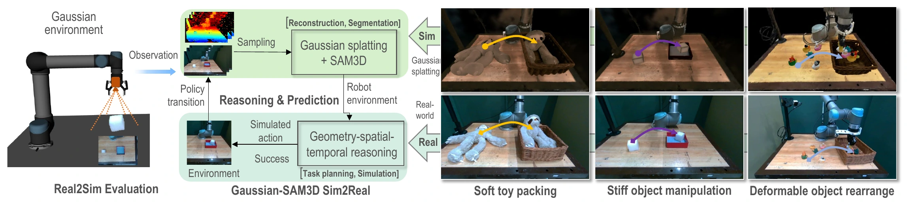
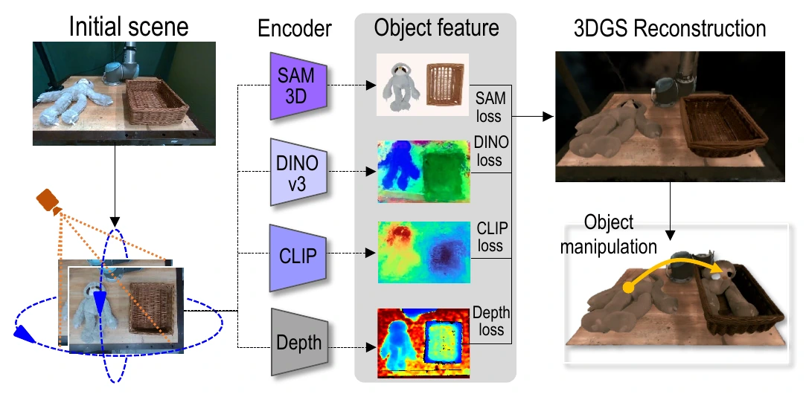
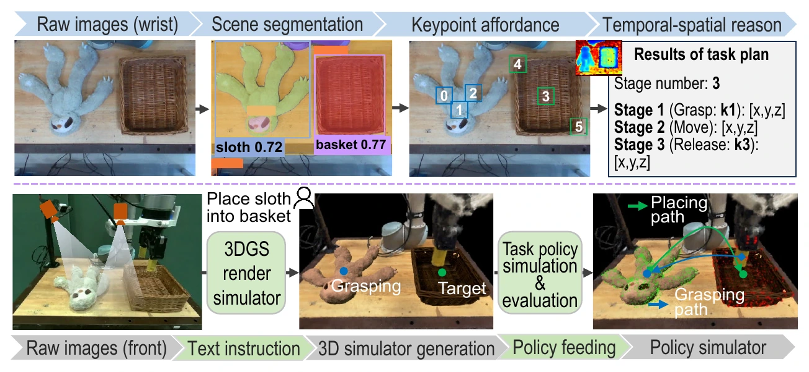
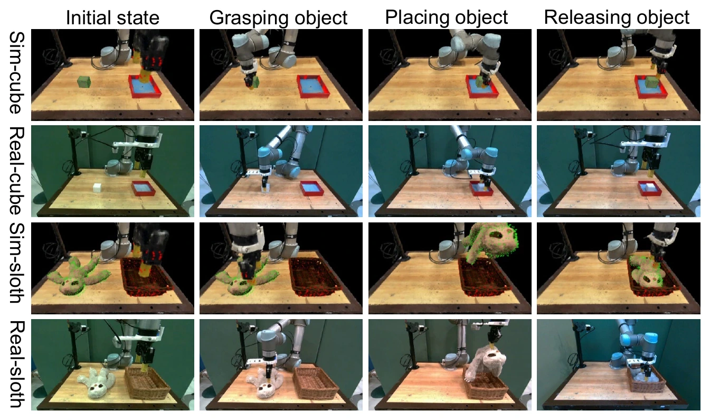
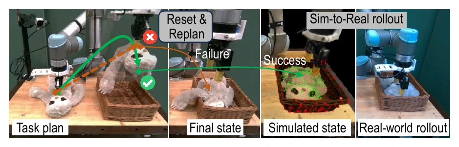
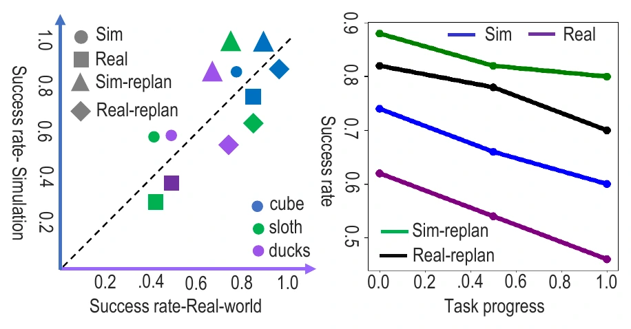
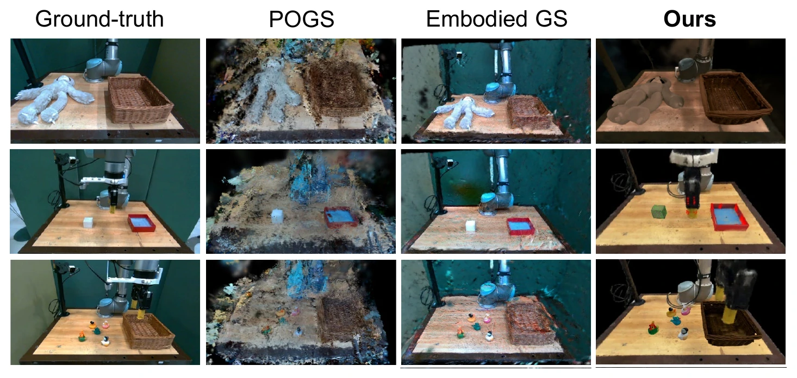

Reconstruct
Build a metrically aligned scene from RGB-D observations using 3D Gaussian Splatting and SAM3D.
Simulation and evaluation before acting.
Ground robot plans in 3D geometry, predict final states,
and verify candidate behaviours before real-world execution.

Robotic manipulation policies are advancing rapidly with increasing reliance on vision-language models for end-to-end decision making. However, reliable deployment remains challenging because many policies lack explicit mechanisms for predicting task outcomes and evaluating whether generated actions will achieve desired final states, causing execution errors to accumulate during long-horizon manipulation.
We present Robot-GST, a geometry-aware spatio-temporal behaviour representation and evaluation framework that constructs a Gaussian-SAM robotic environment for real-to-sim policy verification. From RGB-D observations, 3D Gaussian Splatting and SAM3D build a high-fidelity environment for “simulation and evaluation before acting.” Visual observations and language instructions support long-horizon task planning, while Gaussian-aware final-state estimation connects geometric sampling to state-based trajectory planning. Candidate action sequences are simulated and evaluated before execution to filter infeasible behaviours.
Experiments on cube placing, toy packing, and duck rearrangement demonstrate improved manipulation reliability across rigid, soft, and deformable objects through geometry-aware reasoning and state-aware execution.
From observation to verified action
A shared 3D representation connects scene understanding, task planning, and behaviour evaluation.
Build a metrically aligned scene from RGB-D observations using 3D Gaussian Splatting and SAM3D.
Ground language instructions in keypoint affordances and sample geometrically feasible final states.
Simulate trajectories, check task feasibility, and deploy verified plans. Reset and replan after failures.
Object segmentation, semantic correspondence, language alignment, and depth cues provide a compositional robotic scene.

Language-conditioned keypoints specify grasp and release constraints. Candidate trajectories are evaluated in the reconstructed environment.

Simulation meets the real world
Three manipulation tasks on a UR5 robot with wrist and side RGB-D cameras.
Predict collision-free placement using the cube and box geometry. Evaluate the trajectory in simulation before executing it on the physical robot.

A simulated plan can still fail during real-world execution. When part of the sloth remains outside the basket, the scene is reset and a revised plan is evaluated in simulation before another rollout.
Contact and deformation modelling remain imperfect; simulation reduces, but does not eliminate, the reality gap.

More reliable manipulation after replanning
Mean real-world success rises from 55.3% to 80.0% across the three tasks.
| Task | Without replanning | With replanning | ||
|---|---|---|---|---|
| Simulation | Real world | Simulation | Real world | |
| Cube placing | 80.0 | 80.0 | 100.0 | 90.0 |
| Toy packing | 60.0 | 40.0 | 100.0 | 80.0 |
| Duck rearrangement | 60.0 | 46.0 | 80.0 | 70.0 |
| Average | 66.7 | 55.3 | 93.3 | 80.0 |

High-fidelity scene reconstruction
Photometric quality supports policy evaluation in the reconstructed robotic environment.

| Method | PSNR ↑ | SSIM ↑ | LPIPS ↓ |
|---|---|---|---|
| GScream | 17.82 | 0.590 | 0.560 |
| VR-GS | 24.13 | 0.833 | 0.320 |
| Decoupled GS | 27.32 | 0.905 | 0.300 |
| POGS | 19.66 | 0.869 | 0.098 |
| D3DGS | 12.05 | 0.399 | 0.230 |
| Embodied GS | 14.95 | 0.389 | 0.360 |
| Robot-GST (ours) | 24.64 | 0.963 | 0.044 |
PSNR in dB; LPIPS uses VGG. Bold marks the best value in each column.
Robot-GST connects geometry-aware reconstruction, long-horizon reasoning, and pre-execution evaluation in a unified framework. Reconstruction under occlusion, dynamic scene changes, and imperfect contact and deformation models remain limitations.
{kind=link}
{kind=link}
{kind=link}
{kind=link}
{kind=link}